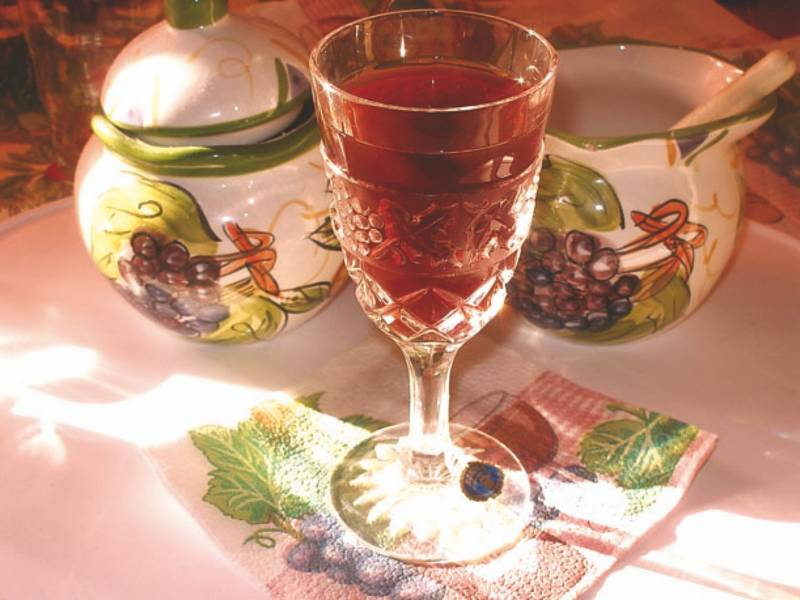
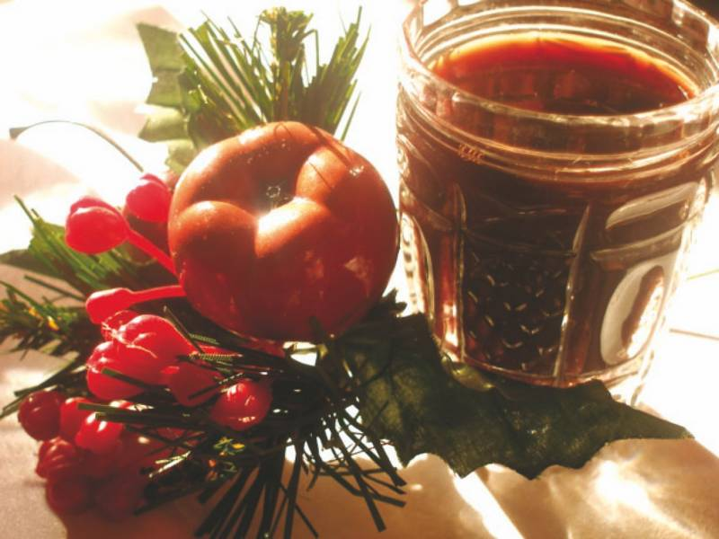

Вина и наливки . Настойки .


Калиновая водочная настойка «На здоровье!»
* 1 кг калины
* 500 мл водки
* 500 мл родниковой воды
* 1 кг сахара
Ягоды калины разомните в пюре, залейте водкой, родниковой водой и всыпьте сахар. Полученную смесь перемешайте, накройте плотной крышкой и поместите в прохладное темное место на 1,5–2 месяца. Спустя это время настойку тщательно процедите и разлейте по бутылкам с плотными пробками.
Ягодная настойка на водке из брусники, клубники, малины, земляники и клюквы «Всесезонная»
* 1 стакан ягод (клубники, малины, земляники, к люквы, брусники или смеси)
* 1 бутылка водки
* 2 веточки мяты
* 3–4 веточки смородины
* 1 стакан сахара
Ягоды поместите в 2-литровую банку и тщательно растолките ступкой. Добавьте мяту, веточки смородины и влейте водку. Банку накройте плотной крышкой и поместите на 3 недели в прохладное темное место.
Спустя это время процедите настой через 4–5 слоев марли и отожмите жмых. В полученную жидкость добавьте сахар, размешайте, перелейте в чистую банку, укупорьте и вновь поместите в темное место.
Настаивайте 2 недели, периодически встряхивая, до полного растворения сахара. Готовую настойку разлейте по бутылкам и укупорьте их.
Ягодная настойка на водке «Упоительная»
* 4 стакана любых ягод
* 4 стакана водки
* 4 стакана сахара
* 4 стакана воды
Ягоды разомните, смешайте с сахаром, залейте водой и прокипятите. Затем переложите в 3-литровую банку, влейте 4 стакана водки, плотно закройте полиэтиленовой крышкой, встряхните и поместите в темное место. Через 3 месяца настойку процедите и разлейте по бутылкам с плотными пробками.
Клюквенная настойка на спирте «Развесистая»
* 500 г клюквы
* 500 мл спирта
* 2 стакана сахара
Клюкву разомните, уложите в 3-литровую банку, засыпьте сахаром, влейте спирт и все перемешайте. Банку плотно накройте крышкой и поместите минимум на 1 месяц в темное место. Затем тщательно процедите настойку и разлейте ее по бутылкам с плотными пробками.
Водочная настойка на тархуне «Аппетитная»
На 1 бутылку качественной водки:
* веточки тархуна – по вкусу
В бутылку качественной водки уложите веточки тархуна и дайте настояться минимум 1 месяц.
Водочная настойка с сахаром «Бабушкина клюковка»
* 500 мл водки
* 300 г клюквы
* 1 стакан сахара
* 1 стакан воды
Клюкву обдайте кипятком и разотрите. Полученную массу смешайте с сахаром, влейте воду и водку. Поместите в темное место на 1 месяц. Готовый напиток тщательно отфильтруйте через несколько слоев марли.
Водка на грецких орехах «Гиппократовка»
* 1 кг ядер грецких орехов
* 2 л водки
* 200 г сахара
* 1 л воды
Один килограмм ядер грецких орехов измельчите и залейте 2 л водки. Добавьте 200 г сахара, 1 л воды и дайте настояться в течение 2–3 месяцев. Готовую настойку процедите.
(При лечении язвы желудка настойку следует принимать по 1 ст. ложке перед едой в течение 5–6 недель. После небольшого перерыва курс лечения необходимо повторить. При язве желудка, гастритах с высокой кислотностью желудочного сока рекомендуется употреблять 30 капель 3 раза в день.)
Настойка на водке из слив с корнем имбиря и корицей «Свекровина сливянка»
* 2 кг любого сорта спелых слив
* 1 л 500 мл водки
* 300 г сахара на трехлитровую банку
* 1 кусочек корицы
* корень имбиря – по вкусу
Спелые целые сливы (подойдут как желтые, так и синие) переберите, удалите гнилые и недозрелые плоды, промойте и дайте обсохнуть. Н аполните ими 3-литровую банку и всыпьте сахар. Измельчите корицу и имбирь и опустите на дно банки, чтобы аромат получился насыщеннее.
Залейте банку до верха водкой, оставив до горлышка пространство на 2 пальца. Закройте полиэтиленовой крышкой и поместите на 1 месяц в темное прохладное место. Готовый напиток процедите через марлю.
Настойка на водке из молодых грецких орехов с медом «Бабулина самодельная»
* 500 мл качественной водки
* 400 г молодых грецких орехов
* 1 ст. ложка цветочного меда
Молодые грецкие орехи мелко нарежьте или натрите на крупной терке. Можно оставить внутренние перегородки, поскольку они придают вкус. Залейте все водкой и настаивайте около 1 месяца, чтобы орехи отдали весь свой аромат.
Перед непосредственным употреблением смешайте с 1 ст. ложкой меда для смягчения вкуса нас тойки.
Вишневая настойка на водке с медом «Радзиховская»
* 500 мл водки
* 500 г вишни
* 2 ст. ложки меда
Вишню и мед залейте водкой. Через 3–5 дней настойку слейте, разлейте в бутылки и укупорьте их.
Настойка на водке с хреном «Слаще редьки»
* 500 мл водки
* 4 ст. ложки измельченного корня хрена
Измельченный корень хрена залейте водкой и дайте постоять 1–2 дня. Затем водку слейте, процедите, перелейте в бутылку и укупорьте ее.
Настойка на водке с сушеной морковью «Передовая»
* 500 мл водки
* 1/2 стакана сушеной моркови
Сушеную морковь залейте водкой и выдержите сутки. Затем процедите, перелейте в бутылку и укупорьте ее.
Настойка на водке с перцем-ассорти, тмином, мятой, петрушкой, цветками липы, рутой, ягодами калины и можжевельника «Оптимальная»
* 1 л водки
* 5 ягод калины
* 5 ягод можжевельника
* 5–6 листиков мяты
* 1 веточка руты
* 1 ч. ложка тмина
* зелень петрушки и цветки липы – по вкусу
* 1 ч. ложка молотого перца
* 1 ч. ложка душистого перца
Все ингредиенты залейте водкой и выдержите в течение 5–7 дней. Затем настой процедите, разлейте в бутылки и укупорьт е их.
Настойка на водке с рябиной и ванильным сахаром «Парменовская»
* 1 кг ягод рябины
* 1 л водки
* ванильный сахар – по вкусу
Рябину промойте и обсушите. Затем уложите на противень, выстланный чистой бумагой, и высушите в духовке, следя за тем, чтобы ягоды не подгорели.
В бутылки насыпьте подсушенную ягоду на треть объема, залейте водкой и поместите на 3 недели в теплое место. Затем настойку процедите и разлейте в бутылки, добавив в каждую из них немного ванильного сахара.
Настойка на коньяке «Рябиновка»
* ягоды рябины, собранные после первых заморозков, и коньяк – по вкусу
Ягоды рябины, собранные после первых заморозков, промойте в холодной воде, очистите от плодоножек и засыпьте в бутылки на две трети их высоты. Залейте коньяком и настаивайте в темном месте около 3 недель. Затем настойку процедите. Храните в плотно закрытых бутылках.
Настойка на водке с брусникой и клюквенным соком «Приваловская»
* 2 кг спелой брусники
* 1 л водки
* 200 мл клюквенного сока
* 200 г сахара
* 200 мл воды
Спелую бруснику насыпьте в бутыль, залейте водкой и настаивайте в теплом месте 2 месяца. Затем процедите, смешайте с клюквенным соком и сахарным сиропом, сваренным из 200 г сахара и 200 мл воды. Готовый напиток разлейте в бутылки и укупорьте их.
Настойка на водке с цветками шиповника и медом «Розита»
* 1 л водки
* 80 г цветков шиповника
* 100 г меда
Цветки шиповника поварите с медом и охладите. Полученную смесь процедите и залейте водкой. Настаивайте 1 неделю, разлейте в бутылки и укупорьте их.
Настойка на водке с лепестками роз «Офелия»
* 100 г лепестков роз
* 1 л водки
* 200 г сахара
* 100 мл воды
Лепестки роз поварите в сахарном сиропе, приготовленном из 200 г сахара и 100 мл воды. Затем залейте водкой и настаивайте 2–3 недели. Готовую настойку процедите, разлейте по бутылкам и укупорьте их.
Черничная настойка с корнем имбиря, дрожжами и розмарином «Чемберленовка»
* 1 кг черники
* 1/2 ст. ложки корня имбиря
* 3–4 листочка розмарина
* 1 л 200 мл воды
На каждые 2 л 250 мл настоя:
* 3 стакана сахара
* 1/2 ст. ложки дрожжей
Чернику, корень имбиря, листочки розмарина положите в посуду, залейте кипятком, выдержите 4 дня и процедите. В полученный настой добавьте сахар, дрожжи и поместите на 3 недели в теплое место для брожения.
После брожения размешайте и дайте настояться в течение трех дней, чтобы осадок выпал на дно. Затем процедите в емкость и выдержите 4 месяца.
Спустя это время разлейте в бутылки и укупорьте их. Поместите бутылки на несколько месяцев в про хладное место.
Настойка на спирте с имбирем, корнем калгана, мятой, анисом и шалфеем «Сборная»
* 1 л 500 мл спирта
* 50 г молотого имбиря
* 50 г корня калгана
* 50 г мяты
* 50 г аниса
* 50 г шалфея
Все ингредиенты положите в бутыль и залейте спиртом. Бутыль укупорьте и поместите на 2–3 недели в теплое место настаиваться. Затем в спирт добавьте 1 л 500 мл воды, смесь залейте в перегонный куб и перегоните. Готовую настойку разлейте в бутылки и укупорьте их.
Настойка на водке с брусникой «Буковская»
* 1 л водки
* 500 г брусники
Бруснику уложите в бутыль и залейте водкой. Бутыль укупорьте и настаивайте содержимое 1 месяц. Готовую настой ку процедите, разлейте в бутылки и укупорьте их.
Настойка на водке с молодыми ростками сосны «Сосновка»
* молодые ростки сосны, собранные весной, и водка – по вкусу
Собранные весной самые молодые ростки сосны мелко нарежьте и залейте водкой. Настаивайте 1 неделю, затем процедите, разлейте в бутылки и укупорьте их.
Апельсинная настойка на водке с корнем имбиря «Мицусито»
* 2 л 500 мл водки
* 300–400 г апельсинных корок
* 20–25 г корня имбиря
Апельсинные корки и корень имбиря положите в бутыль и залейте водкой. Полученную смесь настаивайте 2 недели, затем процедите через фильтровальную бумагу. Готовую настойку разлейте в бутылки и укупорьте их.
Рябиновая настойка на водке по старинному рецепту «Перевертыш»
* рябина и водка – по вкусу
Большую бутыль полностью наполните рябиной, собранной после первых заморозков. Следите за тем, чтобы рябина в бутыли не была уплотнена. Ягоды залейте водкой так, чтобы она покрывала их полностью.
Через сутки в сосуд с ягодами долейте еще водки так, чтобы она опять покрывала все ягоды. Еще через сутки снова долейте водки. Настаивайте смесь в течение 2–3 недель.
Спустя это время бутыль с настойкой переверните вверх дном и настаивайте еще 2 недели. Затем из бутыли слейте треть настойки. В бутыль добавьте такое же количество водки. Через 2 недели операцию повторите: слейте треть настойки, в бутыль добавьте столько же водки. Так можно повторять несколько раз, пока влитая в бутыль и настоявшаяся водка не будет отдавать спиртом.
Настойка на водке с мятой и лимонной цедрой «Купавинская»
* 300 г мяты
* 2 л 500 мл водки
* цедра 1 лимона
Мяту и лимонную цедру залейте водкой и настаивайте 3 недели. Затем настойку процедите, разлейте в бутылки и укупорьте их.
Настойка на водке с корнем калгана, имбирем, мятой, семенами аниса и шалфеем «Белая московская»
* 2 л 500 мл водки
* 50 г корня имбиря
* 50 г корня калгана
* 50 г шалфея
* 50 г перечной мяты
* 50 г семян аниса
Все ингредиенты залейте водкой и настаивайте 3 недели. Затем настойку процедите, разлейте в бутылки и укупорьте их.
Настойка на водке с молодыми побегами рябины «С миндальным запахом»
* 200 г молодых побегов рябины
* 1 л 500 мл водки
Молодые побеги рябины очистите от коры и нарежьте мелкими кусочками. Побеги залейте водкой и настаивайте 3 недели. Затем настойку процедите, разлейте в бутылки и укупорьте их. Настойка имеет миндальный запах.
Настойка на водке с черноплодной рябиной и вишневыми листочками «Апухтинская»
* 100 г черноплодной рябины
* 100 вишневых листочков
* 700 мл водки
* 1 1/2 стакана сахара
* 1 л 500 мл воды
Залейте ягоды и вишневые листочки водой и прокипятите в течение 15 минут. Затем отвар процедите, добавьте водку, сахар, перемешайте, разлейте в бутылки и уку порьте их.
Крыжовенная настойка на водке с ржаным хлебом и густым вареньем «Малаховская»
* 2 кг крыжовника
* 2 л водки
* 2–3 ломтя ржаного хлеба
* густое варенье – по вкусу
Крыжовник положите в бутыль и залейте водой. На ломтики хлеба уложите густое варенье, подсушите в духовке на решетке и добавьте к крыжовнику.
Бутыль плотно укупорьте и поместите на 4 месяца в темное прохладное место. Затем настойку процедите, разлейте в бутылки и укупорьте их.
Настойка на водке с черноплодной рябиной, вишневыми листочками и лимонной кислотой «Нахабинская»
* 3 кг черноплодной рябины
* 200–300 вишневых листочков
* 1 кг – 1 кг 500 г сахара
* 1 ст. ложка лимонной кислоты
* 2 л 500 мл кипяченой горячей воды
На 1 л 500 мл сока:
* 500 мл водки
Ягоды вымойте и положите в кастрюлю вместе с вишневыми листочками. Всыпьте лимонную кислоту, залейте смесь горячей водой и поместите под гнет на сутки.
Через сутки слейте воду, отожмите листья и ягоды, добавьте сахар и прокипятите полученную жидкость в течение 15–20 минут. Затем разлейте по бутылкам, не доливая в каждую из них 150–200 мл. Добавьте в бутылки водку и укупорьте их.
Калиновая настойка на водке «Петушковская»
* 500 г калины
* 500 мл водки
Калину переберите, с больших кистей снимите ягоды, маленькие кисти можно использовать целиком. Ягоды пересыпьте в дуршлаг, тщательно промойте, уложите на бумажные салфетки и дайте высохнуть.
Чисто вымытую и просушенную бутыль наполните до половины ягодами калины, не уплотняя и. Залейте калину водкой так, чтобы ягоды были полностью ею покрыты. Закройте бутыль пробкой и поместите на сутки в теплое место.
Через сутки влейте в бутыль с калиной оставшуюся водку и плотно укупорьте. Настаивайте минимум 3 недели в сухом темном месте.
Водка с черным перцем, лавровым листом, чаем, ванилью и корицей «Коньяк домашний пятизвездочный»
* 1 л водки
* 3 ч. ложки чая
* 100 г сахара
* 2 лавровых листа
* 2 горошины черного перца
* 10 г корицы
* 10 г ванилина
В водку положите чай, лавровый лист, черный перец горошком, корицу, ванилин и сахар. Емкость с полученной смесью поместите на 7 дней в темное место, периодически взбалтывая содержимое. Затем процедите и разлейте по бутылкам с плотными пробками.
Дрожжевой напиток из пива, виноградного сока, водки и растворимого кофе с сахаром «Городец-коньяк»
* 3 л пива
* 3 л виноградного сока
* 500 мл водки
* 1 кг сахара
* 100 г растворимого кофе
* 100 г дрожжей
Смешайте все ингредиенты и выдерживайте 20–30 дней. Затем процедите и разлейте по бутылкам с плотными пробками.
Спиртовой напиток с ягодами шиповника «Минимум миниморум»
* 1 стакан ягод шиповника
* 600 мл спирта
* 2 ст. ложки сахара
* 400 мл холодной кипяченой воды
Измельче нные ягоды шиповника положите в воду, добавьте спирт, сахар и настаивайте 21 день. Затем процедите и разлейте по бутылкам с плотными пробками.
Водка с чаем, лавровым листом, черным и душистым перцем, мятой и ванилью «Остренькая»
* 3 л водки
* 1 ст. ложка чая высшего сорта
* 1 кусочек острого стручкового перца
* 1 ст. ложка мяты или мелиссы
* 3 ст. ложки сахара
* 6 лавровых листов
* 6 горошин черного перца
* 6 горошин душистого перца
* ванилин – на кончике ножа
В большой эмалированной кастрюле смешайте все ингредиенты и поставьте в темное место на 10 дней. Процедите, разлейте по бутылкам и плотно укупорьте их.
Водка с корой дуба, перегородками грецких орехов, зверобоем, мелиссой, эстрагоном и лавровым листом «Изысканная всячина»
* 3 л водки
* 13 перегородок грецкого ореха
* 2 сухие цитрусовые корочки
* 2 горошины черного перца
* 2 лавровых листа
* 2 ст. ложки коры дуба
* 1 щепотка чая высшего сорта
* 1 щепотка зверобоя
* 1 щепотка мелиссы
* 1 щепотка эстрагона
* ванилин – на кончике ножа
Перегородки грецкого ореха положите в большую эмалированную кастрюлю, залейте водкой и поставьте в темное место на 3 дня. Настой процедите, добавьте остальные ингредиенты и поставьте в темное место на 10 дней. Полученный напиток процеди те, разлейте по бутылкам и плотно их укупорьте.
Напиток на основе домашнего коньяка с финиками, грецкими орехами, лимоном, ванилью и кардамоном «Золотое руно»
* 800 мл домашнего коньяка
* 20 сушеных фиников
* 8 ст. ложек очищенных грецких орехов
* 1 лимон
* 6 ст. ложек сахара
* 4 зернышка кардамона
* 1 пакетик ванилина
С кожуры лимона осторожно снимите цедру, из мякоти выжмите сок. Финики разрежьте пополам и удалите из них косточки.
В большую бутыль положите финики, цедру лимона, пряности, орехи, сахар, сбрызните лимонным соком и залейте домашним коньяком. Закройте бутыль пробкой и поставьте в темное место на 3 недели.
Напиток на водке с растворимым кофе, гвоздикой, ва нильным сахаром и корицей «Ароматный домашний коньяк»
* 3 л водки
* 3 ст. ложки растворимого кофе
* 3 ст. ложки сахара
* 3 пакетика ванильного сахара
* 15 бутонов гвоздики
* 1 ч. ложка корицы
Кофе, сахар, гвоздику, корицу и ванильный сахар всыпьте в банку, залейте небольшим количеством водки и взболтайте, чтобы сахар полностью растворился. Затем влейте оставшуюся водку, закройте банку и настаивайте содержимое 2 недели в темном месте. Готовый напиток процедите и разлейте по бутылкам с плотными пробками.
Напиток на спирте с сахарным сиропом «Кофейный коньячок»
* 1 л спирта крепостью 70°
* 170 г молотого кофе
* 500 мл воды
Для сиропа:
* 500 г сахара
* 150 мл воды
Кофе, настоянный в течение суток, смешайте со спиртом, плотно укупорьте емкость и настаивайте в теплом месте в течение 20 дней. Спустя это время смесь процедите.
Добавьте в нее сахарный сироп, приготовленный из 500 г сахара и 150 мл воды. Полученную смесь перемешайте и дайте ей отстояться 2–3 дня. Затем профильтруйте и разлейте по бутылкам.
Для сиропа доведите до кипения воду и постепенно всыпьте в нее сахар при постоянном помешивании. Поварите смесь 10–15 минут на слабом огне.
Водка с сахаром «Тминная»
* 2 л водки
* 1/2 стакана тмина
* 100 г сахара
* 1 стакан воды
В бутыль насыпьте тмин, залейте водкой и оставьте в теплом месте на 2 недели. Из воды и сахара сварите сироп и охладите его. Настойку процедите, смешайте с охлажденным сахарным сиропом и снова процедите через фильтровальную бумагу.
Водка с тмином, анисом, укропом, корнем фиалки и померанцевой коркой «Антик»
* 3 л 500 мл водки
* 500 г тмина
* 50 г аниса
* 20 г семян укропа
* 20 г нарезанного фиалкового корня
* 30 г сухой померанцевой корки
Истолките все пряности и залейте водкой. Бутыль со смесью укупорьте и настаивайте в теплом месте в течение 2 недель. Настойку процедите и разлейте в бутылки.
Водка с мятой, померанц евыми орешками и анисом «Ерофеич. По старинному рецепту»
* 2 л водки
* 100 г мяты
* 80 г аниса
* 80 г молотых померанцевых орешков
Все пряности положите в бутыль, залейте водкой, укупорьте и оставьте на 2 недели в теплом месте. Настойку процедите и разлейте в бутылки.
Оставшуюся гущу можно использовать еще раз. Положите ее в бутыль, залейте половинной порцией водки и настаивайте в течение 1 месяца. Настойку процедите и разлейте в бутылки.
Водка с полынью и анисом «Падал я в душные травы…»
* 3 л водки
* 100 г аниса
* 50 г полыни
Настаивайте 2 л водки на анисе в течение 2 недель и процедите. Залейте полынь 1 л водки и настаивайте 2 дня. Процеженную полынную настойку смешайте с анисовой и разлейте по бутылкам.
Водка с ягодами рябины и сахарной пудрой «Морозная свежесть»
* 400 г ягод рябины
* 750 мл водки
* 100 г сахарной пудры
* 1 стакан воды
Слегка подмороженные ягоды рябины всыпьте в большую бутыль, залейте водкой и оставьте в теплом месте на 2–3 месяца. Спустя это время сахарную пудру смешайте с водой и сварите сироп. Процедите настоянную водку и смешайте с сиропом.
Водка из винного спирта с имбирем, шалфеем, калганом и перечной мятой «Московия»
* 1 л 500 мл винного спирта
* 50 г имбиря
* 50 г шалфея
* 50 г перечной мяты
* 50 г калгана
* 1 1/2 стакана воды
Имбирь, шалфей, перечную мяту, калган положите в бутыль и залейте спиртом. Настаивайте в теплом месте 5–6 дней. Настойку ежедневно взбалтывайте. Затем процедите через несколько слоев марли, разлейте в бутылки и укупорьте их.
Тминная водка «Скоростная»
* 600–700 г семян тмина
* 1 л 500 мл воды
* водка – по вкусу
Семена тмина залейте водой и прокипятите в течение 1 часа. Отвар процедите, остудите и затем заморозьте. В замороженном виде он может храниться долгое время, не теряя тминного запаха и вкуса. Когда нужна тминная водка, возьмите кусочек тминного льда и положите его в водку.
Водка с корицей , лимонными корками, ржаным тестом, бадьяном, кардамоном и мускатом «Из деревенской печи»
* 4 л водки
* 100 г ржаного теста
* 50 г корицы
* 15 г бадьяна
* 20 г кардамона
* 20 г мускатного ореха
* 20 г мускатного цвета
* 1 кг 600 г сахара
* сухие лимонные корки – по вкусу
Перегоните дважды водку на сухих лимонных корках. В емкость (лучше всего бутыль из толстого стекла) положите измельченные пряности и залейте водкой. Затем бутыль обмажьте крутым ржаным тестом толщиной 3–4 см.
В течение четырех дней бутыль ставьте вечером в печь или духовку после выпечки хлеба. Утром каждый раз вынимайте бутыль из печи, но от теста не освобождайте. После 4 суток содержимое бутыли процедите и подс ластите.

<*php require_once ($_SERVER['DOCUMENT_ROOT'].'/setlinks_68fec/slsimple.php'); *>